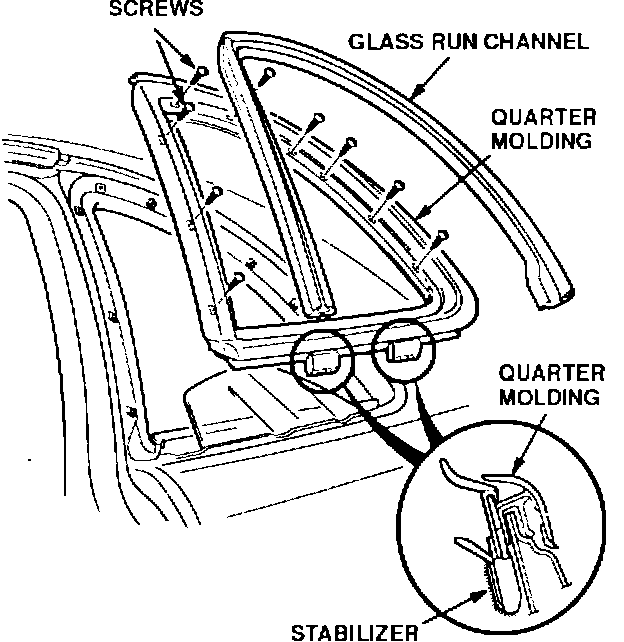
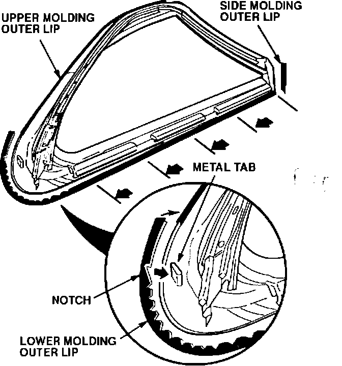
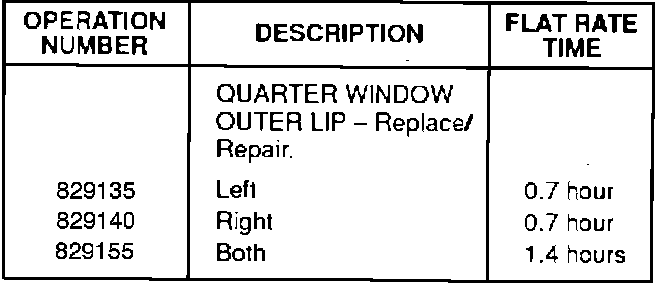

Quarter Window Molding - Outer Lip Repair
BULLETIN NO.93-005
VIN APPLICATION
ALL
MODEL
LEGEND COUPE
YEAR
1991-93
March 9, 1993
Quarter Window Molding Outer Lip Repair
PROBLEM
The outer lip of the quarter window molding is loose or missing.
CORRECTIVE ACTION

If the rear quarter window molding outer lip is missing, replace it with the new parts listed under PARTS INFORMATION. Use the following procedure to attach the new lip or reattach the existing lip.
1. Lower the glass fully.
2. Peel the glass run channel out of the quarter molding.
3. Remove the quarter molding (nine screws).
4. Using an instant adhesive (cyanoacrylate) debonder, clean the mating surface of the outer lip and edge of the quarter molding.
NOTE:
Debonder is available at hobby and craft stores. If debonder is not available, acetone can be used as a substitute; but acetone is not as effective as a debonder.

5. Using the metal tab protruding from the quarter molding as a starting point, attach the lower molding outer lip. Line up the first notch in the molding outer lip with the metal tab.
6. Attach the rubber trim of the molding outer lip to the quarter molding:
^ Inject instant adhesive into 3-4 inches of the molding inner lip, and attach it to the quarter molding.
^ Immediately clean the excess adhesive off of the molding and the molding lip with debonder.
^ Continue to glue the rest of the molding inner lip in 3-4 inch increments, wiping off the excess adhesive.
NOTE:
Use a slow, thick consistency instant adhesive. A thick consistency adhesive bonds better and is easier to apply.
7. Inspect the quarter window rubber trim, if the rubber trim is loose or missing, refer to Service Bulletin 91-044, and repair as necessary.
8. Reinstall the quarter window molding and the run channel. Run the window up and down to confirm proper operation and sealing.
PARTS INFORMATION
Left Quarter Molding Lip Kit:
P/N 04750-SP1-003
Right Quarter Molding Lip Kit:
P/N 04730-SP1-003
WARRANTY CLAIM INFORMATION

In warranty:
The normal warranty applies.
Out of warranty:
Any repair performed after warranty expiration may be eligible for goodwill consideration by the District Service Manager. You must request consideration, and get the DSM's decision, before starting work.
Failed P/N:
04750-SP1-003
Detect code:
061
Contention code:
A02